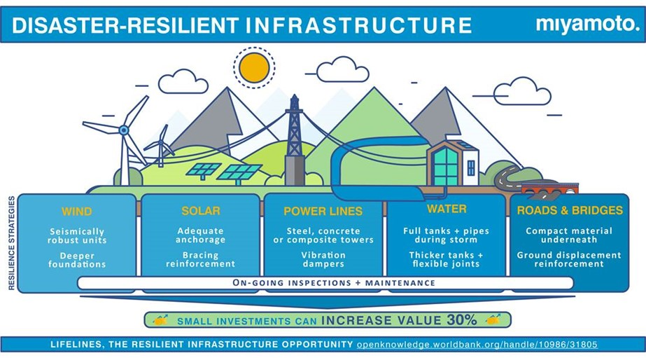

Welcome to InnovatPH! This platform is dedicated to raising awareness and promoting action towards SDG 9: Build resilient infrastructure, promote inclusive and sustainable industrialization and foster innovation. Achieving this goal is not just an aspiration—it is a critical necessity for the Philippines to transition from a developing to a newly industrialized nation.
A strong, resilient infrastructure acts as the backbone of economic activity, reducing transportation costs, improving market access for producers, and ensuring faster response times during natural disasters.
Despite significant economic growth, the Philippines faces persistent hurdles in meeting the targets of SDG 9, particularly concerning research intensity and infrastructure quality.
InnovatPH serves as a central hub for student advocacy. We aim to:
Proponent: Khir Neusprince G. Veloso | Section: 9-Sodium